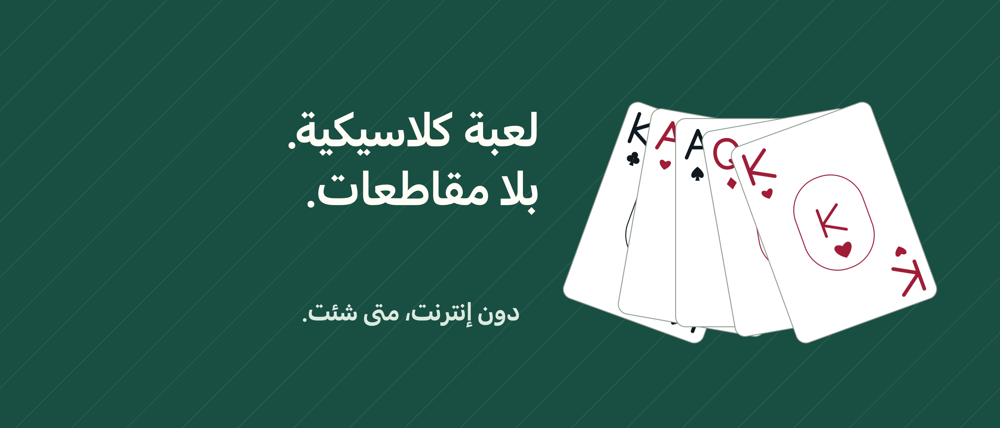

سوليتير Unbound

لحظة لك، ورقة بعد أخرى.
وقت لك مع الأوراق، بلا مقاطعات. العب كلوندايك بسحب ورقة واحدة أو ثلاث أوراق، دون إعلانات أو حساب IFG أو اشتراك.
تراجع وحاول مجدداً التراجع وإعادة الحركات والتلميحات للحركات المسموح بها مجانية. اسحب الأوراق أو المس الورقة ثم وجهتها. اختر الاسترخاء لإخفاء الوقت، أو الكلاسيكي لإظهار الوقت والحركات.
لعبة يمكنك العودة إليها تبقى الألعاب المحفوظة والإحصاءات على جهازك. اختر توزيعاً عشوائياً أو توزيعاً أولياً له حل تم التحقق منه، وعد للتحدي اليومي. ليست كل الألعاب العشوائية قابلة للحل، وقد تؤدي اختياراتك أيضاً إلى طريق مسدود في توزيع تم التحقق منه.
المزيد مع Pro يضيف شراء واحد فري سيل وسبايدر بنوع واحد أو نوعين أو أربعة أنواع من الأوراق، وأرشيف التحديات والمزيد من التخصيص: ست طاولات وستة ظهور للأوراق وثلاثة أنماط لوجوهها. لا تلميحات للشراء أو الاستهلاك.
تعمل اللعبة دون إنترنت. قد يتطلب شراء Pro أو استعادته اتصالاً بالإنترنت وحساب Apple. لا يتزامن التقدم بين الأجهزة، وقد يُحذف عند إزالة التطبيق. استعادة Pro لا تعيد التقدم المحذوف.